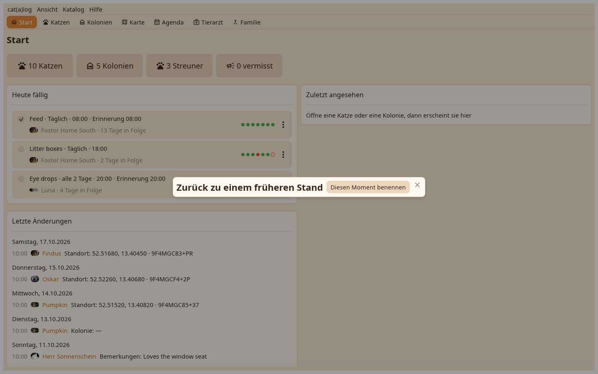

Die Hausarbeitsseiten aus dem Katalog-Menü: Momente, Sicherungen, Wiederherstellen, Archiv, Moderation.

Vor einem Import, einem Abgleich, einem Zusammenführen, einem Archivieren, einem endgültigen Löschen, und von Hand mit einem Namen. Zurückgehen schreibt zuerst in eine Datei, was es entfernt.
Eine vollständige Kopie jedes Katalogs, mit Fotos, wird in deinen Downloads-Ordner geschrieben, wenn du die App nach Änderungen verlässt. Wiederherstellen listet die Sicherungen, eine Zeile pro Katalog, und bringt jede als eigenen Katalog zurück.
Verstorbene Katzen und leere Zuhause, die in der gewählten Zeit ruhten, in eine Datei geschrieben und überall gelöscht, wo du abgleichst; die Datei stellt sie wieder her.
Die Autoren, deren Einträge diesen Katalog erreicht haben, mit ihren Schlüsselcodes; ein endgültiges Löschen entfernt das Material einer Person auf diesem Rechner, eine Sperre hält es fern.